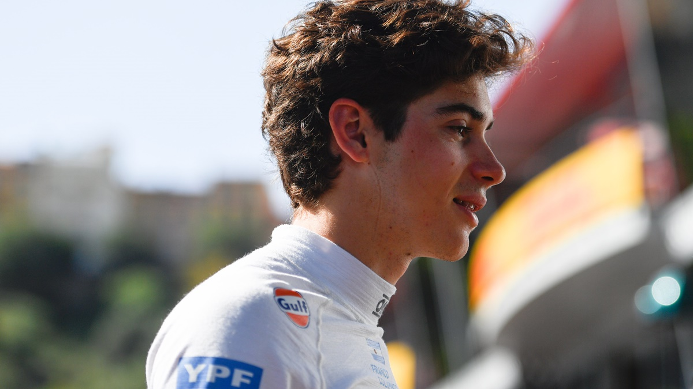

Franco Colapinto finalizo su primer fin de semana en monaco en la f3.

El piloto argentino termino 4to el sabado en la carrera sprint, mientras que el
domingo acabo 6to para asi cerrar su primera participacion en el historico circuito de monaco.
Asi quedo el top 10 de los de 30 pilotos de formula 3